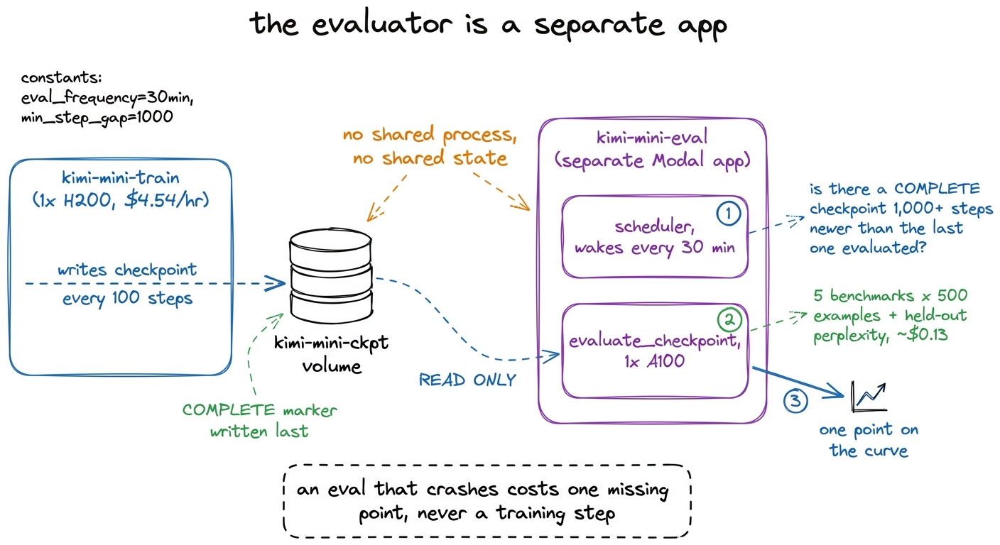
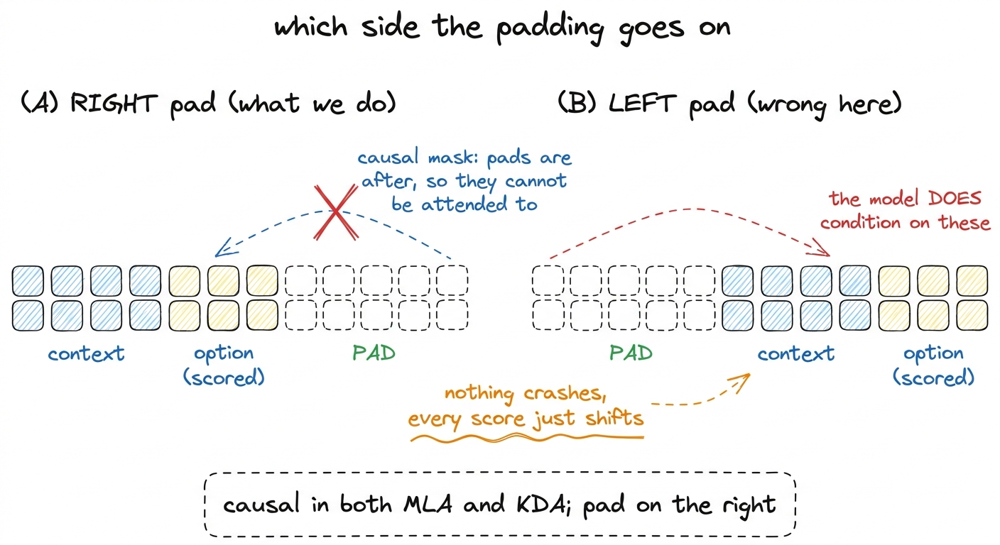
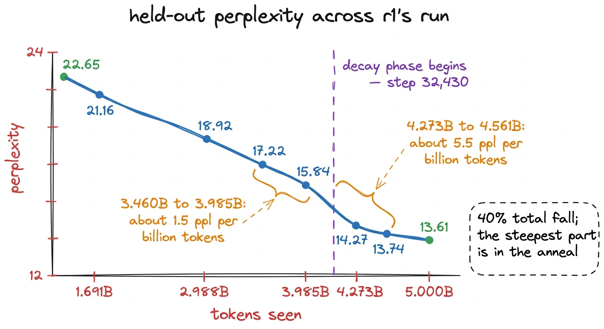
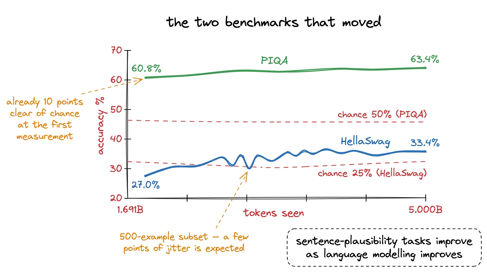
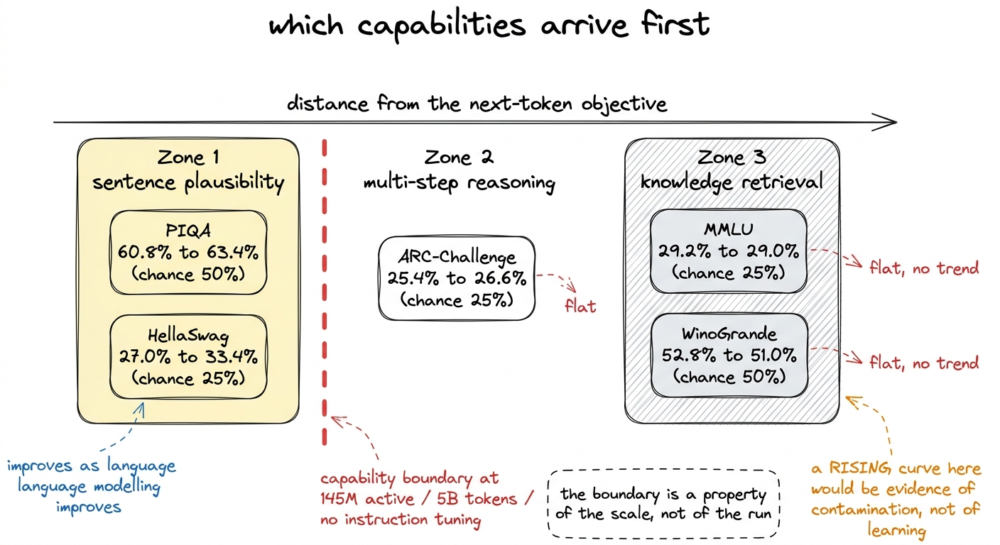
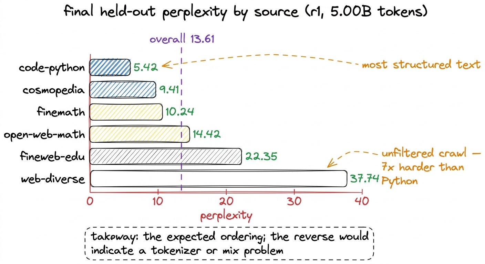

Benchmarks across tokens, not at the end
HellaSwag from 27.0% to 33.4% and held-out perplexity from 22.65 to 13.61, while MMLU, ARC-Challenge and WinoGrande never left chance. Which capabilities arrive first at this scale, and why.
A loss curve tells you that a model is getting better at predicting the next token in the distribution it was trained on. It does not tell you whether the model can do anything. Those two statements stay compatible for an entire run: a data mix that teaches web prose and nothing else, and a router that memorises rather than generalises, both produce a curve that falls smoothly to the end.
So capability was measured as a curve rather than as a result. Every roughly 1,000 steps, the newest checkpoint of r1 was scored on five multiple-choice benchmarks and on held-out text, and the points were plotted against tokens seen. The final numbers are the last row of a table, and the shape of the columns above them is what makes that row mean anything. This chapter is therefore the method first and the numbers second.
The evaluator is a separate application
Evaluation runs in its own Modal app, kimi-mini-eval, which shares nothing with the training processes except read-only volumes. Deploying one cannot restart the other, and the worst outcome of an evaluation crashing is a missing point on a chart. A run that has to pause every thousand steps to score itself has coupled two things that fail for different reasons, and the training loop is the one costing $4.54 an hour.
A scheduler wakes every 30 minutes and asks, for each live run, whether there is a COMPLETE checkpoint at least 1,000 steps newer than the last one this rung was evaluated at.1 The COMPLETE marker is written last, after every other file in the checkpoint directory, and latest_checkpoint() skips anything without one. The checkpointing chapter covers why. Here it does one extra job: it stops the evaluator loading a checkpoint the trainer is halfway through writing. If so, it spawns one evaluation on an A100, which is cheaper than the single H200 that r1 trained on from start to finish and holds r1 comfortably for inference in bf16. Each evaluation scores the five benchmarks and the held-out perplexity slices, and comes to about $0.13.

figure rendering · Evaluation runs as its own application against the checkpoint volume.Scoring a checkpoint rather than the live model has a second consequence: any point on the curve can be recomputed later from the same file. A benchmark number produced by a process you cannot reconstruct is a claim, not a measurement.
What is scored, and what is deliberately not
The five in-loop benchmarks are HellaSwag, PIQA, ARC-Challenge, WinoGrande and MMLU. All five come from the decontaminated suite: their 13-grams were removed from the corpus before tokenization, in the pass that scanned 107,291,411 documents and removed 138,064 of them. That pass is what makes these numbers evidence rather than leakage, and the chapter on decontamination reports its coverage limits.
The sixth metric is held-out perplexity, measured on fixed token slices from the tail shards of each source. The loader consumes shards head-first, and 5 billion tokens of a 104.80-billion-token corpus never reaches the tail, so those slices are unseen text from exactly the distribution the model was trained on. The offset is fixed at the middle of the last shard, so a partially written final shard cannot shift what is being measured between evaluations.2 Perplexity is the smoothest of the six metrics because it is continuous over a fixed text, where the accuracies are counts over 500 discrete decisions and move in steps of 0.2 percentage points.
GSM8K and HumanEval were deliberately not run. Both are generation benchmarks, chain-of-thought arithmetic and executed code, both are meaningless below a few billion active parameters, and both cost far more per example than a multiple-choice forward pass. They are post-training evaluations, and r1 has had no post-training.
Each benchmark is scored on a fixed, seed-0 subset of 500 examples: the same 500 rows every time. Two consecutive points on a curve therefore differ only by what the model learned between them, rather than by which examples were drawn. Resampling each time would add jitter of the same order as the signal, which at these accuracies is a few percentage points across the whole run.
Length-normalised multiple choice, with right padding
Scoring is the standard length-normalised approach: for each option, run one forward pass over context plus option, sum the log-probabilities of the option's own tokens, divide by the number of option tokens, and take the argmax. No sampling, no generation loop, fully deterministic. The detail that is easy to get wrong is which side the padding goes on.
# RIGHT-pad. This model is causal (MLA and KDA both), so tokens after a
# sequence's end cannot influence the positions we score. Left-padding
# would put pad garbage BEFORE the context, where a causal model does
# condition on it — quietly shifting every score.
ids = torch.zeros(len(batch), L, dtype=torch.long)
for k, s in enumerate(batch):
ids[k, :len(s)] = torch.tensor(s)Batched inference frequently uses left padding, because for generation you want every sequence's last real token at the same position. Here the model is causal in both of its attention types, so padding on the right is invisible to every scored position. Padding on the left puts unmodelled tokens in front of the context, where a causal model does attend to them, and every score shifts by an amount depending on how much padding that row happened to receive. Nothing crashes. The accuracies simply come out wrong, in a way that varies with batch composition.

figure rendering · Right padding is invisible to a causal model. Left padding conditionsOne more pin is worth recording: the datasets library is fixed at 2.21.0. PIQA, WinoGrande and HellaSwag are script-based repositories, and datasets 3.x removed script support outright, so an unpinned image builds cleanly and then fails to load three of the five benchmarks.3 The version resolves at image build time, so the failure appears in a container that was working last week and has changed nothing except that a transitive pin moved. Same class of problem as transformers being held at 4.57.6, because >=4.56 resolves to 5.x, which removed an import the Kimi modeling code makes at module scope.
The series
Evaluation went live after r1 had already been training for some time, so the series begins at 1.691 billion tokens rather than at step 0. Twenty-four evaluations ran in all, of which ten are reproduced below. Accuracy on the five benchmarks, and held-out perplexity:
| tokens | HellaSwag | PIQA | ARC-C | WinoGrande | MMLU | held-out ppl |
|---|---|---|---|---|---|---|
| 1.691B | 0.270 | 0.608 | 0.254 | 0.528 | 0.292 | 22.65 |
| 2.123B | 0.266 | 0.614 | 0.254 | 0.522 | 0.296 | 21.16 |
| 2.556B | 0.302 | 0.618 | 0.268 | 0.522 | 0.284 | 20.23 |
| 2.988B | 0.294 | 0.624 | 0.278 | 0.528 | 0.286 | 18.92 |
| 3.460B | 0.288 | 0.608 | 0.286 | 0.538 | 0.300 | 18.02 |
| 3.985B | 0.308 | 0.624 | 0.272 | 0.512 | 0.300 | 17.22 |
| 4.273B | 0.332 | 0.616 | 0.254 | 0.496 | 0.286 | 15.84 |
| 4.561B | 0.320 | 0.628 | 0.266 | 0.538 | 0.296 | 14.27 |
| 4.850B | 0.324 | 0.628 | 0.264 | 0.512 | 0.286 | 13.74 |
| 5.000B (final) | 0.334 | 0.634 | 0.266 | 0.510 | 0.290 | 13.61 |
Chance is 25% on HellaSwag, ARC-Challenge and MMLU, and 50% on PIQA and WinoGrande. The table splits cleanly into two groups, and the split is the result.
What moved
HellaSwag rose from 27.0% to 33.4% against a chance level of 25%. The trajectory is not monotonic point to point: 30.2% at 2.556B falls to 29.4% and then 28.8% before rising again, which is what a 500-example subset looks like when the underlying quantity is moving by a few percentage points across the whole run. The trend is unambiguous, and the final value is more than eight points clear of chance.
PIQA rose from 60.8% to 63.4% against a chance level of 50%. It was already ten points clear of chance at the earliest point we have, 1.691B tokens.
Held-out perplexity fell from 22.65 to 13.61, a fall of 40%. This is the cleanest curve of the six, and it does something worth noting near the end. In the stable phase, from 3.460B to 3.985B tokens, perplexity falls 18.02 to 17.22, which is 0.80 points over 0.525 billion tokens, or about 1.5 points per billion. After the decay phase begins at step 32,430 and 4.25 billion tokens, from 4.273B to 4.561B, it falls 15.84 to 14.27, which is 1.57 points over 0.288 billion tokens, or about 5.5 points per billion. The rate of improvement had been flattening through the stable phase and then rose by more than a factor of three when the learning rate started coming down and the mix switched to the decay shards.
That is the anneal doing what it was included to do. A warmup-stable-decay schedule spends most of its budget at a high, flat learning rate and buys a large share of its final quality in the last 15%, and here the purchase is visible in a metric that is not the loss the schedule is optimising.

figure rendering · Held-out perplexity on unseen tail-shard text. The slope steepens afte
figure rendering · The two accuracy curves with signal, against their chance levels.What did not move
ARC-Challenge went 25.4% to 26.6% against 25% chance. MMLU went 29.2% to 29.0% against 25% chance. WinoGrande went 52.8% to 51.0% against 50% chance. All three sit at chance, and none shows a trend across the twenty-four evaluations; the point-to-point variation is consistent with 500 examples and no underlying movement.
This is the expected ordering rather than a disappointment, and the reason is what each benchmark is asking for.
HellaSwag and PIQA are sentence-plausibility tasks. Both present a short context and a small set of continuations, and both are answered correctly by a model that assigns higher probability to whichever continuation reads like ordinary language about an ordinary physical situation. A language model improves at those the moment it improves at language modelling, because they are the training objective wearing different clothes. That is why HellaSwag is the classic early-signal curve.
MMLU is knowledge retrieval across a broad set of academic subjects, which requires having stored specific facts and retrieving the right one under a question format the model has never been trained to recognise. ARC-Challenge is grade-school science, and its "challenge" split is the subset that retrieval alone fails on. WinoGrande is pronoun resolution designed to defeat word-association shortcuts. None of the three is reachable by a model with 145 million active parameters that has seen 5 billion tokens and has never been instruction-tuned: not enough capacity to store the facts, not enough data to have met them often enough, and no format training at all.

figure rendering · The five benchmarks arranged by how far they sit from next-token prediA flat MMLU curve at this scale is the capability boundary this model sits below, not a failure of the run. The inverse claim is worth stating just as precisely: given a corpus that had 2,398,082 unique 13-grams from eight benchmark test sets stripped out of it before tokenization, a rising MMLU curve here would have been evidence of contamination rather than of learning. There is no mechanism by which a 145M-active model trained on 5B tokens of general web and code learns a broad curriculum's worth of examinable facts, so if that number had climbed, the first thing to check would have been the decontamination report rather than the model.
MMLU is on the dashboard for exactly this reason: so that flat-at-chance reads as normal for this size rather than as something to investigate at three in the morning. WinoGrande is there so that its later movement, at rungs and token counts we did not reach, would be visible against a baseline.
Where the perplexity actually sits
The overall figure of 13.61 is an average over six per-source measurements, and the spread across them is larger than the total fall across the run.
| source | final held-out perplexity |
|---|---|
| code-python | 5.42 |
| cosmopedia | 9.41 |
| finemath | 10.24 |
| open-web-math | 14.42 |
| fineweb-edu | 22.35 |
| web-diverse | 37.74 |
| overall | 13.61 |
The ordering is the expected one, and reading it is a check on the data pipeline as much as on the model. Python is the most structured text in the corpus: rigid syntax, a small effective vocabulary at any given point, and long stretches where the next token is nearly determined by the previous one. Cosmopedia is synthetic textbook prose, clear and repetitive in form. The two maths corpora sit in the middle. FineWeb-Edu is web text filtered for educational content, and web-diverse is unfiltered crawl, the hardest thing in the corpus to predict and nearly seven times the perplexity of Python. A model that scored well on unfiltered web and badly on Python would indicate something wrong in the tokenizer or the mix; this ordering means the model learned the structure that was there to be learned.

figure rendering · Where the average comes from. The spread across sources is wider thanThe one piece of ladder evidence that survived
r1 was the first rung of a three-rung ladder, and the point of a ladder is to see how a measurement moves with scale. One comparison from the benchmark series is usable, taken early in training when all three rungs had consumed the same number of tokens:
HellaSwag: r3 28.4% > r2 27.6% > r1 27.0%.
The bigger model was better at the same token count, in the correct order, which is what a ladder should show. That is the entire scaling result from evaluation, and it should be read for what it is: three points, taken once, at the fewest tokens any of them had seen, on the noisiest of the six metrics. No scaling fit was made, because the ladder was never completed. r2 and r3 were stopped at 75% and 50% of their token budgets when the Modal workspace was disabled, so there is no pair of finished runs to fit anything to. Their loss values, 2.99 and 2.95, are mid-run values and are reported as such. r1 is the only rung of the three that finished.4 The MFU investigation did fit a two-point power law across r1 and r2, both measured on one H200, active^0.35, and it is labelled an extrapolation everywhere it appears. There is no equivalent for capability: capability at 50% of a token budget on a WSD schedule is not comparable to capability at 100%, because the decay phase is where a disproportionate share of the improvement arrives.
What is not in this chapter
There is no peer comparison. SmolLM2-1.7B, Qwen3-1.7B and Llama-3.2-1B were the intended reference points, and running r1 against them on this same frozen suite was planned and never executed, so those numbers appear nowhere in this book. A comparison against published scores obtained under a different harness, a different subset size and a different padding convention is not a comparison.
There is also no instruction-following, reasoning or code-generation result, because r1 has had no supervised fine-tuning, no instruction tuning and no reasoning distillation. It is a base model that has only ever done next-token prediction.
What the chapter does contain is a set of curves rather than a set of finishing scores, produced by a scorer whose padding convention, subset size, random seed and library versions are all written down. The final HellaSwag figure of 33.4% is more than eight points above chance, and it is the score of a 145M-active base model that cost $252.35 to train. Both halves of that sentence are the result, and neither is improved by leaving the other one out.